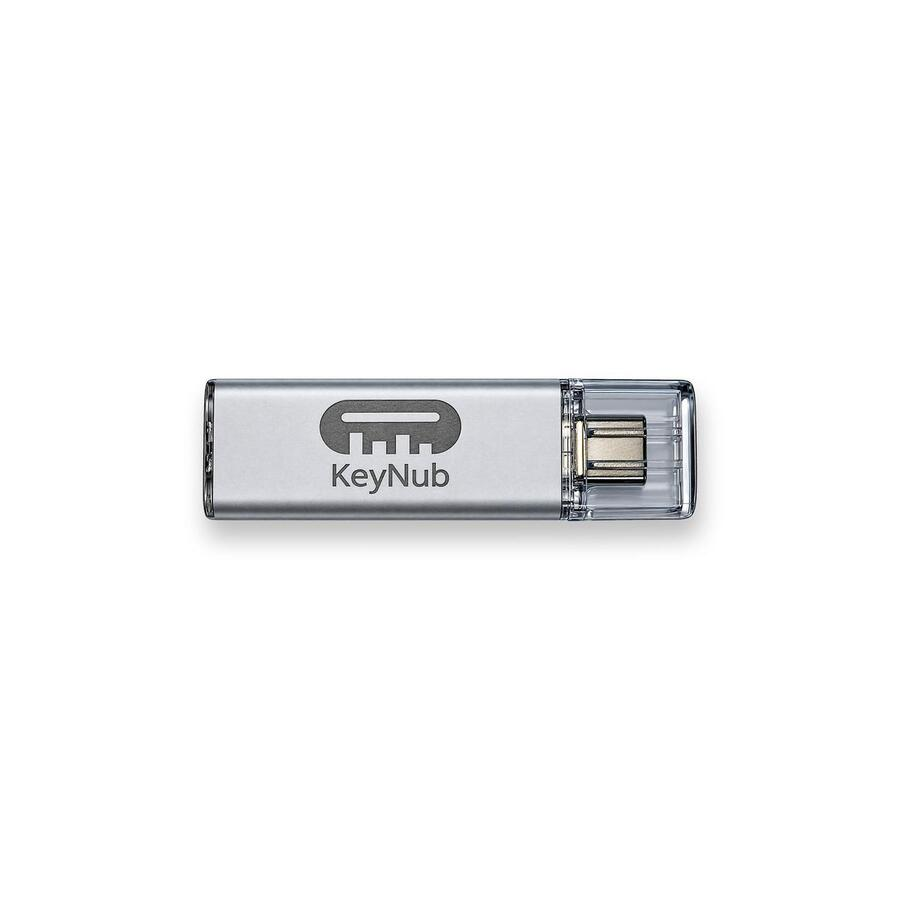
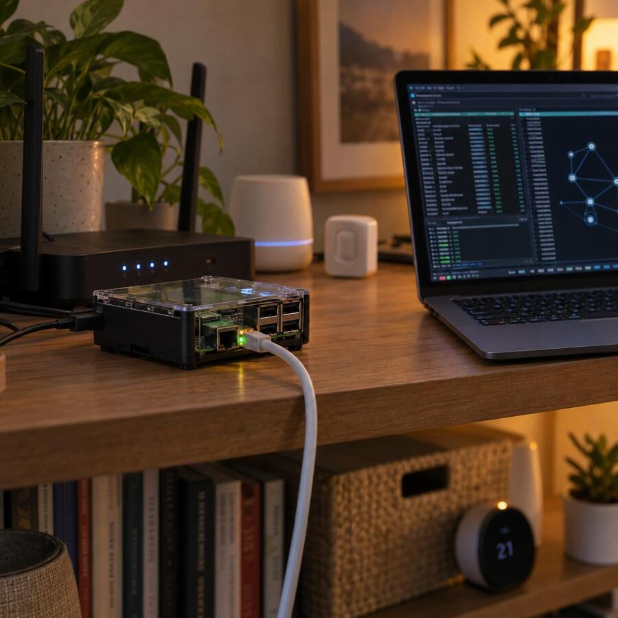
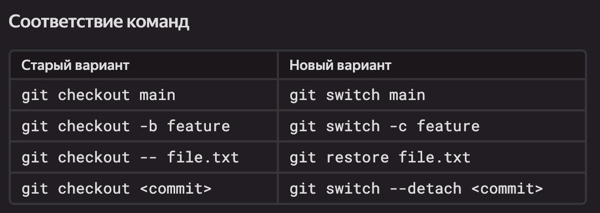
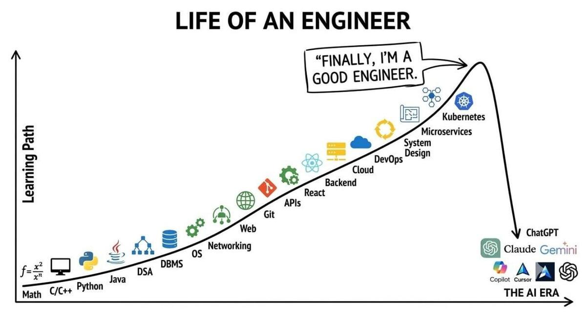
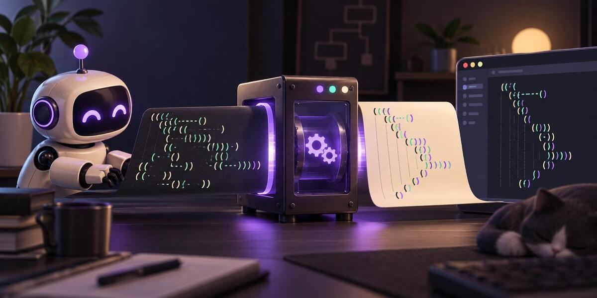
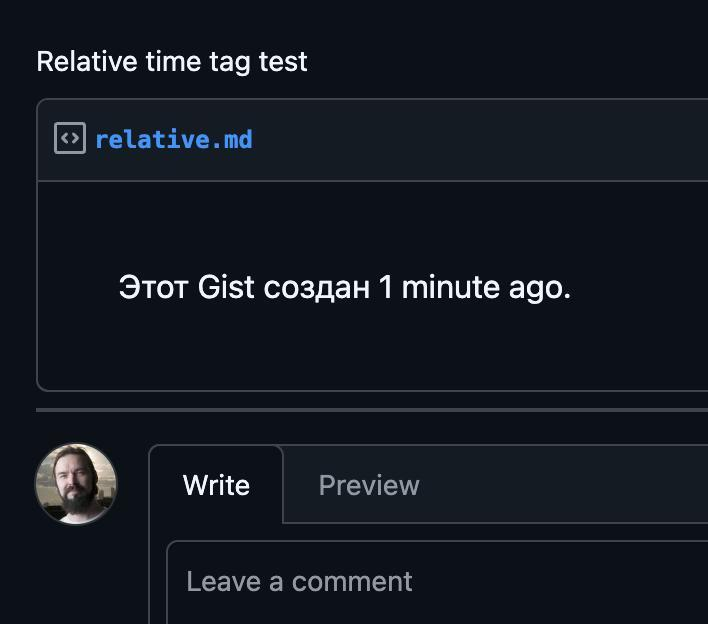

Последние три дня пытаюсь вытащить данные со своего Яндекс Диска
posted on 2026-10-13
Сначала пробовал использовать rclone, но в какой-то момент это API отключили. Пробовал вытаскивать данные через WebDAV - но он тоже уже не работает. При этом веб-интерфейс Яндекс Диска еще хоть как-то работает, хотя и не все файлы там можно скачать. Для некоторых файлов скачивание не работает, но доступны превью.
В итоге сегодня навайпкодил небольшое приложение, которое пытается вытащить хоть что-то, используя API веб-интерфейса Яндекс.Диска. Фишка этого приложения в том, что оно не просто пытается скачать файл рекурсивно из той папки, которую вы укажете, но и если файл недоступен, если оригинал недоступен, то эта утилита пытается скачать хотя бы какую-нибудь превью этого файла. Сейчас пытаюсь с этой штуки получится восстановить семейный архив, который у меня был на Яндекс Диске и который я почему-то по наивности своей не бэкапил.
Надеюсь и кому-то из вас эта утилитка тоже пригодится – не могу же я быть один такой, кто полагается на надежность облачных сервисов 🙂
Ссылка на репу: https://github.com/40ants/YDiskSaver
Как забэкапить все бакеты в S3 Yandex Cloud?
posted on 2026-10-12
В прошлом посте я писал рецепт бэкапа виртулок. И мне таки удалось одну самую большую таким образом спасти, а вот с той на которой был развернут Staticbot – не повезло.
Сегодня вспомнил что у меня там ещё и в S3 лежала часть статики для разных сайтиков. Решил забэкапить и их.
Как это сделать? Нужно завести в Яндекс Облаке сервисный аккаунт с правами storage.editor и создать для него статический ключ. Так вы получите идентификатор ключа и секрет.
Дальше создайте с ними такой конфиг для утилиты rclone:
[cloud]
type = s3
provider = Other
access_key_id = XXXXXXXX
secret_access_key = YYYYYYYYY
endpoint = [https://storage.yandexcloud.net](https://storage.yandexcloud.net)
acl = private
и сохраните в файл rclone.conf
После установите саму утилиту. Я предпочитаю через nix-shell. Но можно и любым пакетным менеджером.
Если через nix-shell, то нужно сделать такой файлик shell.nix:
{ pkgs ? import <nixpkgs> {} }:
pkgs.mkShell {
packages = [ pkgs.rclone ];
}
И запустить в этой директории команду nix-shell - попадете в окружение где доступен rclone.
Ну и финальное, чтобы забэкапить вообще все S3 бакеты до которых сможет дотянуться аккаунт, делаем такой bash скрипт backup.sh:
#!/bin/bash
for bucket in $(rclone --config rclone.conf lsd cloud: 2>&1 | awk '{print $5}');
do echo "Backing up $bucket";
rclone --config rclone.conf sync cloud:$bucket ./$bucket/;
done
При запуске, он сначала получит через rclone список доступных бакетов, а потом забэкапит каждый из них в ту же папку откуда запущен.
Как забэкапить виртуалку в Yandex Cloud
posted on 2026-10-09
Ввиду неиллюзорной угрозы потерять данные, решил забэкпить данные своих виртуалок в Яндекс Облаке. Да так, чтобы образа их лежали у меня дома, на жестком диске.
Вот краткая инструкция, как это можно сделать.
- Корректно выключи исходную ВМ, чтобы получить согласованное состояние файлов и баз данных.
Update: ПОДОЖДИ СЛЕДОВАТЬ ИНСТРУКЦИИ, Я ТЕПЕРЬ НЕ МОГУ ЗАПУСТИТЬ СВОЮ ВИРТУАЛКУ – ПОЛУЧАЮ ОШИБКУ: Resource allocation is restricted
В консоли открой Compute Cloud → Диски и хранилища → нужный диск → Создать образ. Дождись завершения создания — после этого исходную ВМ можно снова запускать.
Создай временную ВМ с Ubuntu, SSH-доступом и внешним IP. Подключи к ней дополнительный диск, созданный из полученного образа. Её собственный загрузочный диск будет отдельным.
Подключись к временной ВМ и найди диск-копию:
```
lsblk -o NAME,SIZE,TYPE,MOUNTPOINTS,SERIAL
```
Допустим, это /dev/vdb. Нужен весь диск, а не раздел /dev/vdb1. Его разделы должны оставаться непримонтированными; форматировать диск не нужно.
- На своём компьютере, в терминале macOS или Linux, запусти:
```shell
ssh USER@HELPER_IP \ "bash -o pipefail -c 'sudo -n dd if=/dev/vdb bs=4M status=progress | gzip -1'" \ > vm-backup.img.gz.part && mv vm-backup.img.gz.part vm-backup.img.gz
```
Замени пользователя, IP и устройство на свои. Команда предполагает, что пользователь временной ВМ может выполнять sudo без пароля. Образ сразу скачивается на компьютер, поэтому хранить его целиком на временной ВМ не требуется.
- Проверь скачанный архив:
```shell
gzip -t vm-backup.img.gz
```
При успешной проверке команда завершится без вывода. Для уверенности в восстановлении лучше также проверить загрузку копии в локальном гипервизоре.
Получится полный RAW-образ диска, сжатый gzip. Если у ВМ несколько дисков, сохрани каждый отдельно. После распаковки образ занимает полный размер исходного диска. Настройки самой ВМ — CPU, RAM, сеть, BIOS/UEFI — сохрани отдельно.
Если удобнее получить сразу QCOW2 через Object Storage, у Yandex Cloud есть скрипт yc-disk-export-tool: он создаёт вспомогательную ВМ, экспортирует диск в бакет, откуда файл можно скачать. Для одного бэкапа вариант по SSH требует меньше настройки.
Common Lisp & Hardware Security
posted on 2026-10-04

Сегодня наткнулся на ещё одно интересное применение Common Lisp — SDK KeyNub для работы с аппаратным USB-ключом. Такой ключ хранит лицензию и нужен для использования коммерческого ПО. Получается, что можно на Common Lisp писать софт, для использования которого потребуется такой вот hardware-ключ.
Как не открыть лишний порт на сервере
posted on 2026-09-26

Сегодня возился с настройкой сервисов умного дома на Raspberry Pi. На таких машинках постоянно что-нибудь меняется: устанавливаешь новое ПО, обновляешь старое, правишь конфиги, пробуешь очередной сервис. И в какой-то момент хочется убедиться, что после всех этих изменений наружу не стал смотреть какой-нибудь неожиданный порт.
Узнал про git switch
posted on 2026-09-24

Наблюдая за нейронками, за тем, как они работают, порой узнаёшь для себя что-нибудь новенькое, какой-нибудь приёмчик, который каким-то образом прошёл мимо тебя.
Конец эпохи программирования
posted on 2026-09-18

Вот эту картинку я сегодня стырил в одном из каналов. Не смог не перепостить, потому что последние пару дней именно такие ощущения меня преследуют - что ушла целая эпоха. Раньше ты мог считать себя программистом на C++, Python или JS, а теперь мы все просто макаки, перекладывающие промпты.
В чём сложность форматирования кода на Lisp?
posted on 2026-09-16

В нынешние времена, когда большую часть кода пишут LLM, особенно остро встаёт проблема форматирования. Нейронки часто с этим косячат — особенно с отступами. В идеале перед коммитом они должны одной командой приводить все изменённые файлы к принятому в проекте формату.
Мой сетап с Atomic Spec и Beads
posted on 2026-09-15
В одном из предыдущих постов я писал о том, что такое Atomic Spec. А в одном из последних проектов настроил упряжь так, чтобы скиллы Atomic Spec работали вместе со скиллами Beads.
Отсчет времени в разметке на GitHub
posted on 2026-09-05

Недавно исследовал, как выглядят комментарии Codex в pull request на GitHub. В некоторых из них увидел время, показывающее, как давно агент сделал ревью. Сначала подумал, что это какая-то обычная часть интерфейса GitHub, но оказалось — нет.
Created with passion by 40Ants